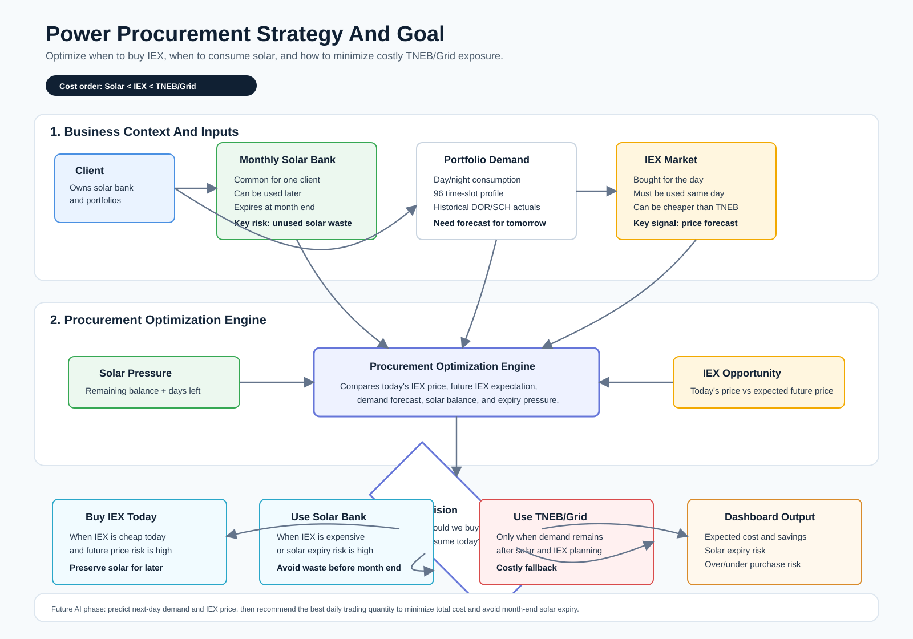

Power Procurement Strategy And Goal
Visual summary of how the application should decide when to buy IEX, when to consume the monthly solar bank, and when TNEB/Grid becomes the fallback source.

Visual summary of how the application should decide when to buy IEX, when to consume the monthly solar bank, and when TNEB/Grid becomes the fallback source.
